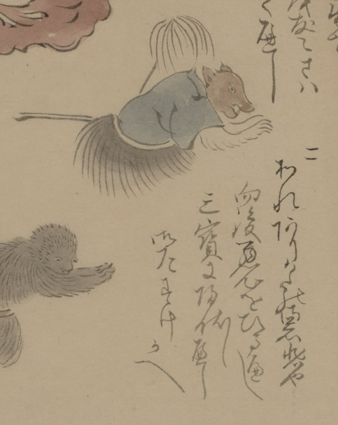

獣の化物。頭部は犬か狐のようで、腕にふさふさした毛が生えている。青い衣と腰蓑状を身につけて、ひざまずき両手をついて詫びている。脇に毛を束ねた、はたき状のものが見える。詞書に「あなありかたの御慈悲や向後悪心をひるかへし三宝に帰伏し候へし御たすけ候へ」とあり。
出典：親書誌：U426_nichibunken_0150：付喪神絵詞；ツクモガミエコトバ／日付：2010／資源識別子：U426_nichibunken_0150_0098_0000
Copyright (c)2010- International Research Center for Japanese Studies, Kyoto, Japan. All rights reserved.